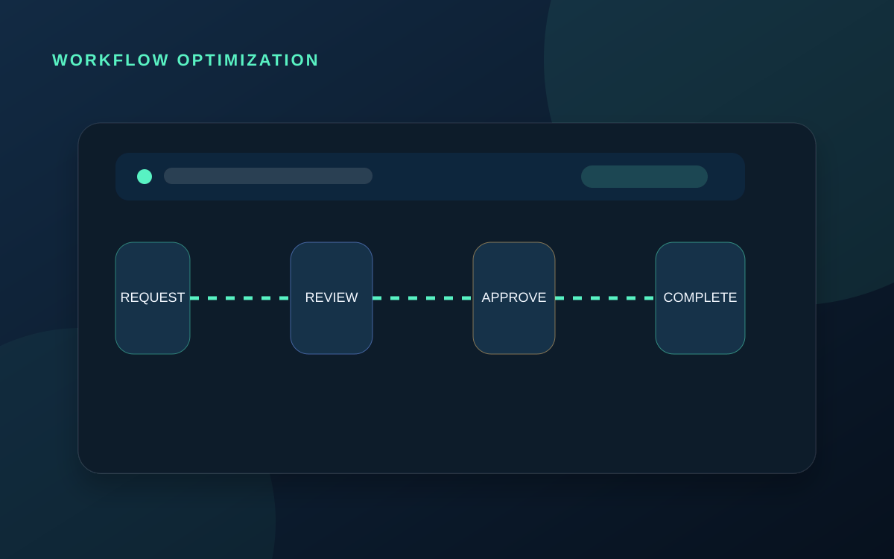
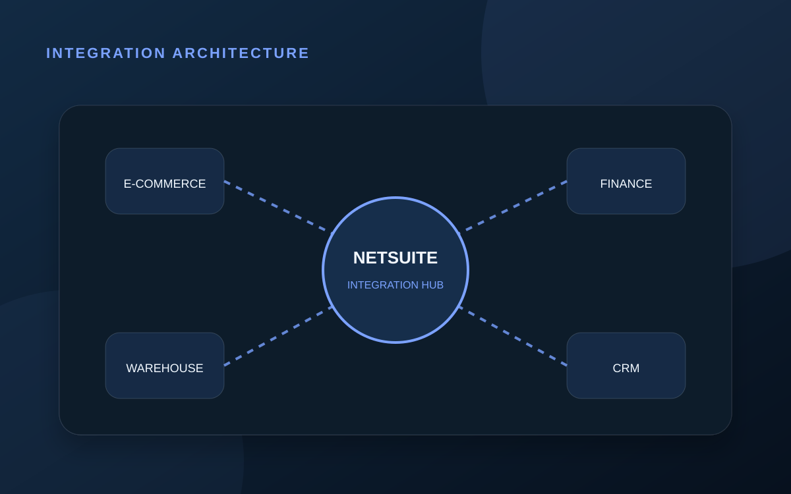
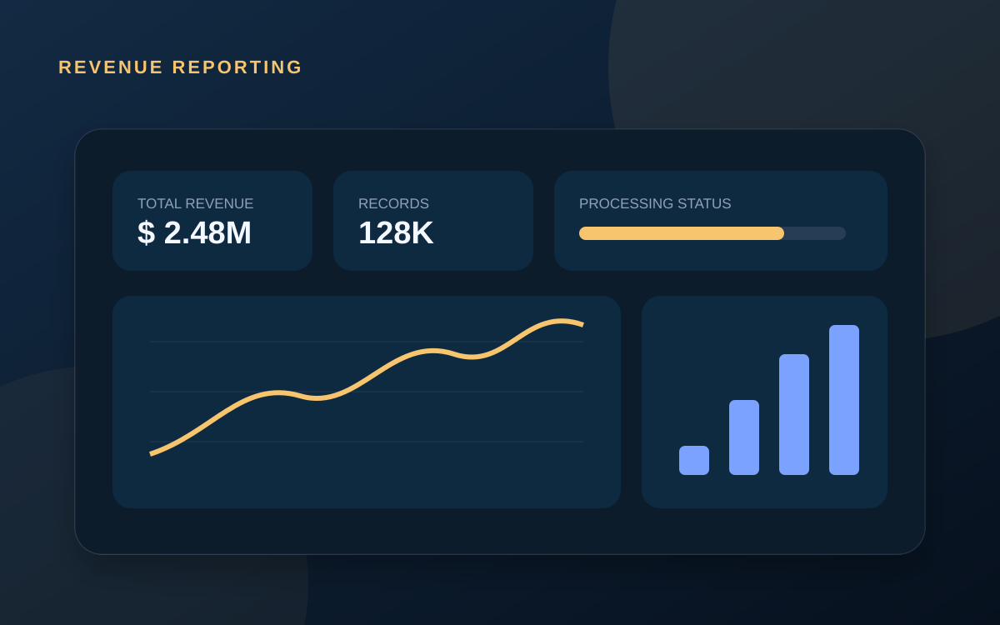
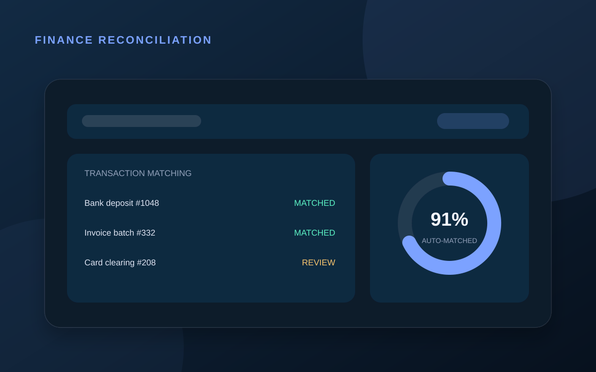
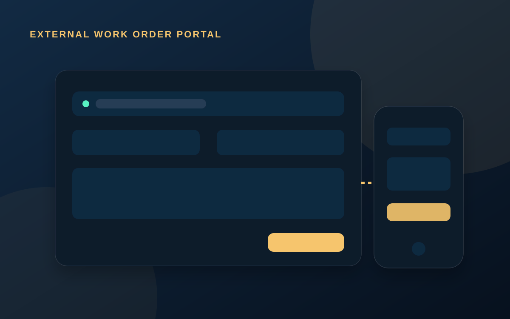
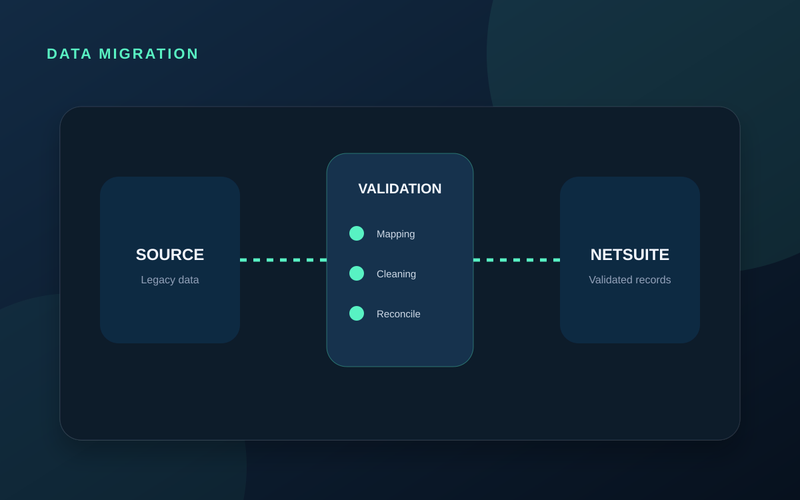
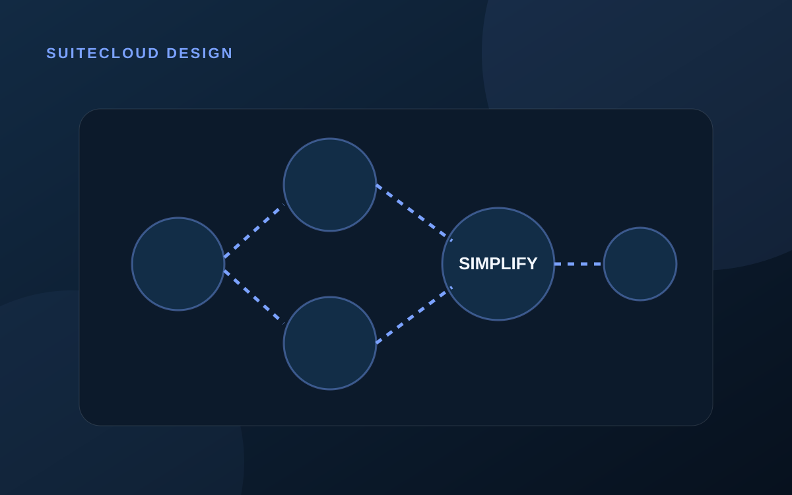

When a NetSuite workflow becomes too complex
How to identify whether the real issue is state count, repeated actions, routing design, or logic that belongs in SuiteScript.
Read article →NETSUITE · ERP · INTEGRATIONS · AUTOMATION
I help finance and operations teams improve NetSuite through thoughtful customization, dependable integrations, clearer reporting, and automation that removes unnecessary manual work.
Technical delivery shaped by economics, data, and real business process understanding.
FEATURES / CAPABILITIES
I work across the full solution lifecycle—from requirements and architecture to implementation, testing, controlled deployment, and production support.
Custom transaction logic, Suitelets, RESTlets, User Events, Client Scripts, Scheduled and Map/Reduce processing, workflows, saved searches, reports, permissions, and SDF deployments.
Data mapping, APIs, middleware, validation, retries, exception visibility, reconciliation, and supportable ownership models.
Approvals, reconciliation, reporting, transaction controls, validation, and operational workflows designed around accurate financial data.
const solution = {
stable: true,
scalable: true,
documented: true
};JavaScript, React, Next.js, Python, SQL, API development, Azure services, Git workflows, code review, testing, and maintainable documentation.
SELECTED PORTFOLIO
Client identities and confidential implementation details are excluded. Each case study illustrates the type of work, thinking, and outcome I deliver.

NETSUITE · WORKFLOW · FINANCE
Reframed an overgrown approval process into clearer states, routing rules, ownership, and escalation paths without losing the existing business controls.

CELIGO · REST · NETSUITE
Designed resilient data flows between NetSuite and external platforms with structured mappings, validation, error visibility, retries, and reconciliation.

FINANCE · REPORTING · MAP/REDUCE
Created a scalable reporting experience for large financial datasets, combining background processing, filters, exports, progress visibility, and reliable totals.

INTERCOMPANY · JOURNALS · CONTROLS
Converted multi-entity journal preparation into a guided process with validation, preview, controlled record creation, and reusable account and subsidiary logic.

WORDPRESS · RESTLET · OPERATIONS
Connected a customer-facing web form to NetSuite through RESTlets, validated JSON payloads, and structured parent and line record creation.

DATA · VALIDATION · MIGRATION
Built repeatable extraction, transformation, validation, import, and reconciliation steps so enterprise data could move safely between systems and environments.
EXPERIENCE
My background spans financial modeling, software development, Oracle enterprise applications, and senior NetSuite delivery.
NetCommerce · Montevideo / Remote
Customization, integration, automation, reporting, architecture, deployment, and production support.FlairsTech · Remote
Extensions, interfaces, reporting, SQL solutions, migrations, testing, and enterprise support.FlairsTech · Remote
Web applications, APIs, modern JavaScript, React technologies, SQL, cloud services, and Agile delivery.Tata Consultancy Services · Montevideo
Enterprise development, integration, data processing, incident analysis, testing, and releases.Clinixon · Montevideo
Financial modeling, operating assumptions, tax-structure research, and scenario analysis.BLOG / FIELD NOTES
Notes on reliability, workflow design, integrations, and the operational realities behind successful NetSuite delivery.

How to identify whether the real issue is state count, repeated actions, routing design, or logic that belongs in SuiteScript.
Read article →
Mapping, validation, ownership, retries, monitoring, and reconciliation are what make an integration trustworthy.
Read article →
The work is not only coding. Month-end brings dependencies across transactions, integrations, controls, reporting, and users.
Read article →BOOK A 1:1 CALL
Use a short discovery call to discuss the current process, the technical issue, and the clearest next step.
CONTACT
Share the process, pain point, integration, reporting need, or NetSuite customization you are considering. The form sends directly to my inbox.
Google Analytics 4 is installed so site visits, resume actions, contact submissions, and booking clicks can be reviewed by the site owner.